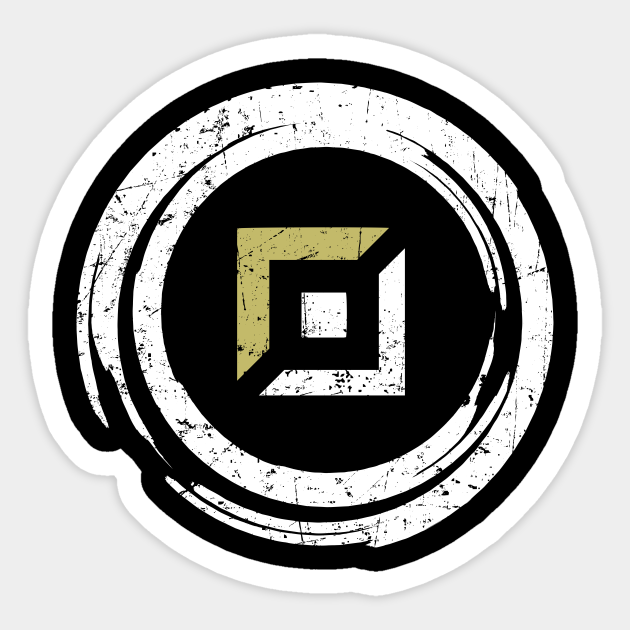

Top lane
La top lane, es un rol en el que normalmente se suelen jugar campeones tanques y luchadores, tiene una fase de lineas complicada de jugar en la que cosas como el tradeo pero sobretodo el control de oleadas es lo mas importante, en niveles altos normalmente se suelen jugar campeones de weak side y jugar para contribuir al equipo, en soloq, especialmente en low elo es muy común ver gente smurfear la fase de lineas y de ahí carrear la partida con campeones mas carrys o splitpushers, caben excepciones en algunas composiciones en las que se juegue un rango o un tirador para castigar en la fase de lineas al rival y llevar el tanque en otro lado, o opciones como kennen, un estilo mas agresivo en peleas de equipo.
